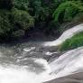
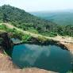

Malappuram is a city and the headquarters of the Malappuram district in Kerala, India. It is the 4th largest urban agglomeration in Kerala and the 20th largest in India and a city in the Indian state of Kerala, spread over an area of 158.20 km² including the surrounding suburban areas.
Arimbra Hills or Mini Ooty is one of the most scenic places to visit in Malappuram. The place is called mini Ooty because of its resemblance to the hill station of the same name, and a rather famous one at that.
A basin at the base of waterfalls where people can enjoy a dip in the pond is something everyone wants to have an experience. Keralam Kundu Waterfalls are undoubtedly the best of all Malappuram Tourist Places, and that is why people keep flocking here to have an experience of the mystical.
The water flows in from the forest of the western ghat and forms a pool of crystal clear water at the base of the falls. Also, it is believed that the water has many me
Arimbra Hills


keralamkundu waterfalls

Teak Museum
Shanthi Theram park